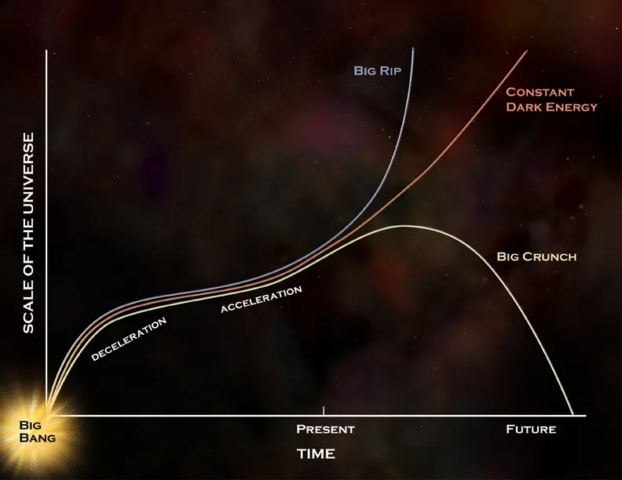

My research addresses fundamental questions about the nature of gravity and dark energy.
 Our understanding of the Universe has advanced immeasurably in the last century. We gained remarkable
insights into the cosmos, confirming how it evolved from a hot, dense early state to form the galaxy web we observe
today. Highlights include the detailed mapping of cosmic microwave background (CMB), the existence of dark matter, and the recently-observed accelerating expansion of the Universe. However, these discoveries have created new
challenges to our understanding of the laws of physics.
Our understanding of the Universe has advanced immeasurably in the last century. We gained remarkable
insights into the cosmos, confirming how it evolved from a hot, dense early state to form the galaxy web we observe
today. Highlights include the detailed mapping of cosmic microwave background (CMB), the existence of dark matter, and the recently-observed accelerating expansion of the Universe. However, these discoveries have created new
challenges to our understanding of the laws of physics.
One of the most compelling problems in physics today is our observation that the expansion of the Universe appears to be speeding up. In fact, if gravity works as described by Einstein’s celebrated theory of General Relativity, there is no currently-understood component of matter or energy that can produce an accelerating expansion. This ongoing mystery is called the “dark energy problem”, and it accounts for ∼ 70% of the Universe’s total energy budget. We have a wide range of possible causes of this cosmic acceleration, but all have challenges or objections; while these new theories predict measurable differences in cosmological observables (such as in the expansion of the Universe), current data cannot distinguish different dark energy models decisively.
 One possible explanation comes from the quantum theory of matter, according to which the empty space (or vacuum) possesses non-zero energy due to virtual particles that continually form and disappear. Unfortunately, a crude calculation of how much energy this would give to empty space dramatically disagrees with the observations by 120 orders of magnitude.
Another explanation interprets dark energy as a new kind of dynamic energy field, often referred to as quintessence, whose effect on the Universe’s expansion is opposite of that of ordinary matter and energy. While this could be a valid answer, current observations are not able to unveil what quintessence is like, what it interacts with, and how it is created. An important last possibility is that we do not yet understand the nature of the gravitational force on cosmological scales. However, to date, there is not a compelling new theory of gravity. In fact, we have not acquired data on sufficient scales for any new theory to distinguish itself as superior to General Relativity.